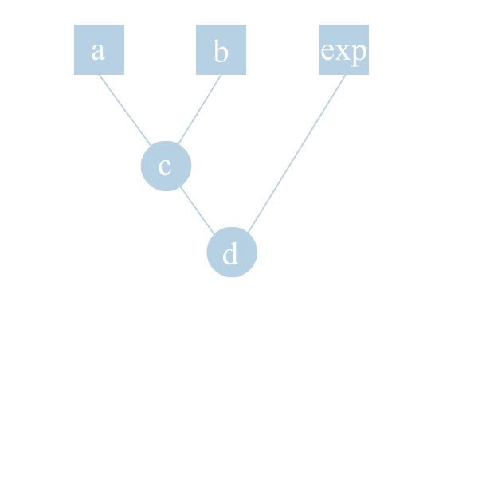
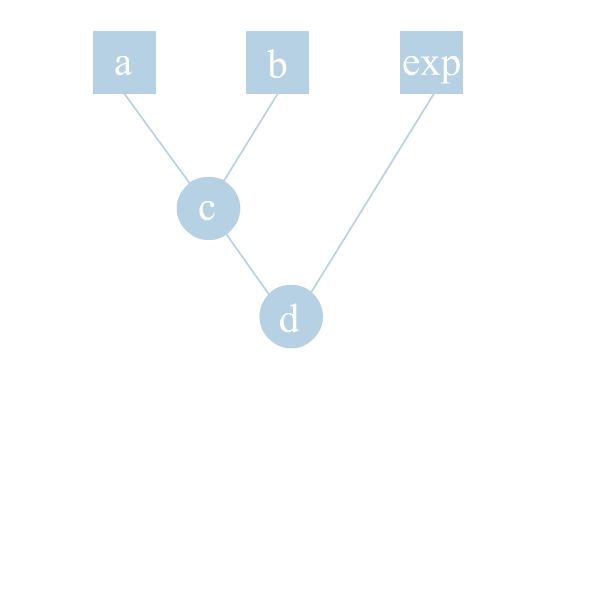
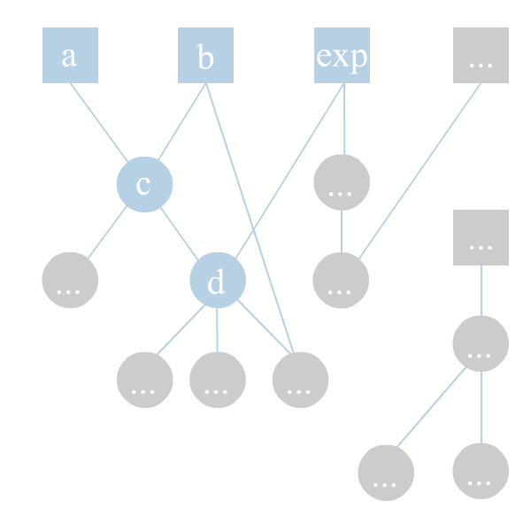

Firera tutorial
Getting started: declarative FRP
Let's start with a simple example:
const base = {
a: 10,
b: 20,
c: [(n, m) => n + m, 'a', 'b']
}
// Create a Firera app instance
const app = Firera({
__root: base
})
app.get('c'); // 30
// Here comes a FRP magic
app.set('b', 32);
app.get('c'); // 42
This is a simple example for introducing functional reactive programming priciples.
Here 'a' and 'b' are observable values, and 'c' is a computable value.
Both a, b, and c are called cells. This is because they act like cells in Excel: some cells just have values, while
the other cells are computed automatically according to their formulas.
In this case, "a" and "b" have just static values, ad the value of "c" is a sum of "a" and "b". Hence "c" depends on values of "a" and "b".
The value of "c" will always be the sum of "a" and "b", we don't need to update it manually.
There is no proactive intrusion: you cannot change the value of "c" manually, it's changed based on the values of other cells(in this case "a" and "b").
Here a, b and c are data streams as their values can change over time.
What's special about Firera is that it has completely declarative syntax.
While other FRP libraries(Rx, Most) use method chains, the Firera app is described with a plain object(POJO: plain old JS object) and pure functions. It gives a lot of advantages that will be discussed later.
We instanciate a Firera app by passing this object to Firera function. Than we can change some input values(like "a" or "b") with set(key, val) method.
Note that you couldn't change "c", because it violates the main FRP priciple: a computable cell value should be computed only based on it's arguments, and never set manually.
In Firera language, "base" variable is called plain base, "a", "b", "c" are cells,
the expression [(n, m) => n + m, 'a', 'b'] is called F-expression,
and the function used in F-expression is called formula.
Cells "a" and "b" relatively to cell "c" are called arguments.
Cells which can be manually changed, like a or b, are called free.
A set of cells is called grid(in all examples at the beginning we'll have only one grid called "__root". This is a conventional name which indicates this grid is the root grid of the app).
How Firera works is pretty easy to understand: when some of the observable cells changes, the values of arguments are being taken and passed to formula.
The result of the formula invocation becomes the value of the cell.
This is what happens when we run "app.set('b', 32);":
- Firera sets the values of cell "b" to 32
- Firera looks for the cells who depend on "b". In this case this is only one cell - "c"
-
Firera wants to calculate the value of "c" according to the new value of "b":
- Firera founds that we need values of "a" and "b" to compute the value of "c"
- Firera takes the values of "a"(10) and "b"(32) and passes it to the formula function of "c"
- As the formula of "c" is "(n, m) => n + m", and we pass "10" as the first argument and "32" as the second, we got ther result of "42"
- Firera sets the current value of "c" to "42"
One computable cell can depend on other computable cell also.
const base = {
a: 10,
b: 20,
c: [(n, m) => n + m, 'a', 'b'],
exp: 2,
d: [Math.pow, 'c', 'exp']
}
// Create a Firera app instance
const app = Firera({
__root: base
})
app.get('d'); // 900
Here "d" depends both on "free" and "computable" cells(exp and c respectively).
If you change the value of "a", Firera will compute the other cells in following order: c, d.
A sef of cells, described with one plain base, is called grid. In our example we have only one grid which is called "__root".
It can be visualized like this:
 The lines display dependencies between cells. Squares mean "free" cells, rounds are "computable".
 The lines display dependencies between cells. Squares mean "free" cells, rounds are "computable".
The grid could be as big as you need. E.g. something like this:

The idea of Firera is you can build the whole app as a big grid of computable cells.
Working with DOM
Let's move to more real-world examples.
Say we need to validate adding a new comment to a comments' list. User enters his login, email and comment text and presses submit button.
Let's start with validating login.
At first glance, for getting a stream of what user inputs as a login, we could write something like this:
// function to validate login by length
var is_long = a => a.length > 2;
var base = {
login: '',
is_login_valid: [is_long, 'login'],
}
var app = Firera({
__root: base,
});
// assigning handler that will change the "login" cell
document.querySelector('input[name=login]')
.addEventListener('change', function(e){
app.set('login', e.target.value);
})
Each time user changes the value of input, we update of cell "login". And the value of cell "is_login_valid" will be true or false, depending on length of "login".
This will work as expected, but it's a verbose and too imperative approach. We don't like to assign event handlers manually.
We can include special package to work with DOM, which is called HtmlCells instead. It allows us to create event streams of DOM events in a declarative manner.
HtmlCells is one of default Firera packages which are included in Firera dist, so we should just
add it's name to packages parameter of our app's config.
// function to validate login by length
var is_long = a => a.length > 2;
var base = {
$real_el: document.getElementById('fr-app'),
login: ['input[name=login]|getval'],
is_login_valid: [is_long, 'login'],
}
var app = Firera({
__root: base,
}, {
packages: ['HtmlCells']
});
A mandatory thing for HtmlCells to work is to define a cell named "$real_el" which should contain the root DOM node of our app.
Then we just mention the name of cell "'input[name=login]|getval" - and that's all! Firera automatically creates handler for the input.
How it works step-by-step:
- Firera founds the definition of "login" cell, which refers to the cell named "input[name=login]|getval"
- The cell "input[name=login]|getval" seems to be uninitialized(as there is no definition of it in our plain base), looks like Firera need to create an empty free cell, but...
-
HtmlCells parses each cell name by regexp:
| . "input[name=login]|getval" matches this expression. is any valid CSS selector, and appoints what exactly we want to listen from this DOM node(the full list os aspects see on the HtmlCells package page). - HtmlCells package founds that we need to get values of DOM node by selector "input[name=login]". It assigns delegated event handler to $real_el, which listens "change" and "keyup" events in all subtree.
- Each time user inputs something in input field, the DOM handler is fired and "input[name=login]" is updated with the value of input field.
There is two kinds of html cells: getters and setters. Getters listen for changes in DOM, e.g. events. Setters update the DOM with it's value.
Let's add a class to form to indicate it's valid with a help of html setter.
var is_long = a => a.length > 2;
var base = {
$real_el: document.getElementById('fr-app'),
login: ['input[name=login]|getval'],
is_login_valid: [is_long, 'login'],
"form|hasClass(valid)": ['is_login_valid'],
}
var app = Firera({
__root: base,
}, {
packages: ['HtmlCells']
});
"form|hasClass(valid)" is an example of setter. If the value of 'is_login_valid' cell is true, it will add class "valid" to nodes found with "form" selector in scope of "$real_el".
It uses "hasClass" aspect, which requires one parameter: the name of class("valid").
Notice that if you write like this:
login: 'input[name=login]|getval',
Firera will consider "login" as static cell with the value of string 'input[name=login]|getval'.
We need to listen the other cell instead, that's why we write it in brackets. All the primitive, static values are written as is, and all the computable expressions are written in brackets.
Of course, we could write the same a bit simpler:
{
$real_el: document.getElementById('fr-app'),
"form|hasClass(valid)": [is_long, 'input[name=login]|getval'],
}
...but we require the field is_login_valid to be present to help us later.
We write a small example that shows how to work with DOM without pain of assigning handlers etc.
Our app is almost completely declarative. The only proactive intrusion is using html setter "hasClass", which changes the property of DOM node.
We can escape from this later by using cool Ozenfant templates.
-
Will it work without $real_el defined?No
"Total FRP" concept
If you look closer to previous example, you can see that every values that depend on event is also an event stream!
'input[name=login]|getval' is an original event stream of values of input node in DOM. 'login' field is also an event stream with equvivalent values, and 'is_login_valid' is an event stream too!(with Boolean values).
This table how the values of these cells change as user enters something into input:
| "input[name=login]" DOM node value | "input[name=login]" cell | "is_login_valid" cell |
| M | M | false |
| My | My | false |
| Myk | Myk | true |
| Myko | Myko | true |
| Mykol | Mykol | true |
| Mykola | Mykola | true |
This is an example how one stream depends on other with formula. I call this "Total FRP" concept, which means that all values in application should be event streams which depend on each other.
Managing streams
We need to validate also user's email(with RegExp). If the form is valid, and user clicks "Send" button, we should do some useful work, e.g. and AJAX request.
const simple_email_regex = /\S+@\S+\.\S+/;
const is_email_valid = (str) => {
return simple_email_regex.test(str);
}
const is_long = a => a.length > 2;
const base = {
$real_el: document.getElementById('fr-app'),
login: ['input[name=login]|getval'],
email: ['input[type=email]|getval'],
is_login_valid: [is_long, 'login'],
is_email_valid: [is_email_valid, 'email'],
is_form_valid: ['&&', 'is_email_valid', 'is_login_valid'],
"form|hasClass(valid)": ['is_form_valid'],
send_form: ['&&', '-is_form_valid', 'button.send|click'],
add_comment_request: ['transistAll', (email, name, text) => {
// ... some ajax request here...
console.log('It works!', email, name, text);
}, 'send_form', '-email', '-login', '-textarea[name=text]|getval'],
}
const app = Firera({
__root: base,
}, {
packages: ['htmlCells']
});
The form is valid when both login and email are valid.
We implement this by using '&&'. It's a built-in Firera function that works like '&&' operator in JS, but on data streams instead of simple values.
The equivalent is to write:
is_form_valid: [(a, b) => {
return Boolean(a && b);
}, 'is_email_valid', 'is_login_valid'],
Each time the values of 'is_email_valid' or 'is_login_valid' changes, the function is run passing both arguments.
The '&&' built-it function is just a kind of 'syntactic sugar' that shortens your code.
Now we should understand, when are form is ready to be sent. It happens when:
a) user clicks "Send" button
b) The value of cell "is_form_valid" is truthy.
a) user clicks "Send" button
b) The value of cell "is_form_valid" is truthy.
The naive approach will look like this:
send_form: ['&&', 'is_form_valid', 'button.send|click'],
but this will not work.
Imagine the following scenario:
- User inputs something in text fields, but leaves email empty, and clicks "Send"
- The value of "is_form_valid" will be "false", the value of "button.send|click" is an Event object. It's truthy, but the result will be false. Everything is right so far.
- User enters valid email. The value of "is_form_valid" becomes "true".
- As the value of "is_form_valid" changes, Firera calculates the "send_from" cell. true && Event => true! So the form is being sent immediately when email becomes valid... FAIL!
send_form: ['&&', '-is_form_valid', 'button.send|click'],
This small changes makes our app work correct!
Note that this can be used only when you have at least one active argument.
foo: ['-bar'],
or
foo: ['-bar', '-baz'],
are pointless as "foo" will be never computed!
Cell types
Funnel
In Firera there are a few ways to calculate the value of cell according to it's arguments. For now we knew only one, default type.
const app = Firera({__root: {
a: 30,
b: 12,
c: [(a, b) => a + b, 'a', 'b']
}})
app.get('c'); // 42
app.set('b', 100);
app.get('c'); // 130
The principle is: when one of arguments is changed, we take the values of all cells-arguments and pass them to our formula.
But this way doesn't suit for all cases.
Say we need our cell to listen to changes in few cells and console.log them.
const app = Firera({__root: {
a: 30,
b: 12,
c: [(a, b) => {
console.log('Some cell changed!', a, b);
}, 'a', 'b']
}})
app.set('b', 100);
// Some cell changed 30, 100
app.set('a', 22);
// Some cell changed 22, 100
app.set('a', 22); // same value
// Some cell changed 22, 100
As you see, this way cannot help us: each time some parent cell changes, we receive values of all parent cells.
Therefore we don't know which one have changed actually.
We have a special cell type for such cases called "funnel".
const app = Firera({__root: {
a: 30,
b: 12,
c: ['funnel', (cell_name, cell_value) => {
console.log('Cell', cell_name, 'changed to', cell_value);
}, 'a', 'b']
}})
app.set('b', 100);
// Cell b changed to 100
app.set('a', 22);
// Cell a changed to 22
app.set('a', 22); // same value
// Cell a changed to 22
Cell type is written first in our F-expression. We can omit writing default cell type, but if we use funnel, we should write it.
As you see, when using funnel type, we get the name and value of the very cell that changed, and only this.
Only two arguments will be passed to formula each time: a name and a value of cell that changed.
You can use any number of arguments with funnel type, but, obviously, it has sense for ar least two arguments.
This cell type is used when we need to "join" several "streams".
const second = (_, a) => a;
const app = Firera({__root: {
'input_changed': [
'funnel',
second,
'input|keyup',
'input|change',
'input|focus'
],
}})
In this example "input_changed" will be the union of three other cells.
Closure
But what if we need to log all the history of changes in cells? We want to get this:
const app = Firera({__root: {
a: 30,
b: 12,
c: ['funnel', (cell, val) => {
// SOME MAGIC!
}, 'a', 'b']
}})
app.set('b', 100);
app.get('c'); // [['b', 100]]
app.set('a', 22);
app.get('c'); // [['b', 100], ['a', 22]]
app.set('a', 22);
app.get('c'); // [['b', 100], ['a', 22], ['a', 22]]
... and so on. Obviously we need some way to store previous data.
We used to use pure functions as formulas in Firera. Using some global variables
inside Firera formulas is a dedly sin! Our code becomes dirty and fragile, this eleminates all the advantages Firera gives us.
Luckily there is another cell type called "closure".
In this type, our formula should return another function, which becomes a formula for a cell.
It's easier to understand it in code:
const app = Firera({__root: {
a: 30,
b: 12,
c: ['closureFunnel', () => {
// this function will be run only once, when the grid is initiated.
const log = [];
// this function will be returned once and used as formula for "c" cell
return (cell, val) => {
log.push([cell, val]);
return log;
}
}, 'a', 'b']
}})
app.set('b', 100);
app.get('c'); // [['b', 100]]
app.set('a', 22);
app.get('c'); // [['b', 100], ['a', 22]]
app.set('a', 22);
app.get('c'); // [['b', 100], ['a', 22], ['a', 22]]
When run for the first time, your formula function should return another function, which becomes an actual formula!
The main advantage here is you can create and use some closure variabled, while your code remains clean(because this
variables could be accessed only from this particular function).
This helps you to avoid using global variables and falling into shared mutable state abyss.
As you might notice, you can combine "funnel" and "closure" type. 'closureFunnel' or 'funnelClosure' - both ways are correct.
Async
The next useful type is called "async".
It's used when we deal with async functions(i.e. function which perform async actions, not the ES6 async functions).
It works like default cell types, but the first argument for our formula will be always callback function used to "return" data when async function finishes.
const app = Firera({__root: {
'user': 'Mikolalex',
'posts: ['async', (cb, username) => {
$.get('/posts/' + username, function(data) {
console.log('data received!');
cb(data);
})
}, 'user']
}})
Though 'posts' cell has only one argument, it's formula receives two arguments. First is a callback which we call when our async job is done to return the result.
const app = Firera({__root: {
'time': 3,
'await': ['async', (cb, time) => {
setTimeout(() => {
cb(time);
}, time * 1000);
}, 'time'],
'foo': [(t) => {
console.log(t, 'seconds passed!');
}, 'await']
}})
Async type allows us to use async-executed functions in our grid along with others with minimal additional efforts.
Nested
The last useful cell type is nested. As you might notice, in Firera the result of computaion is always put to only one cell. Form the other hand, in imperative programming we are used to see that [dirty] function can not only eturn some value, but also change a few other variables. This behaviour, generally harmful, can sometimes help a lot.
In Firera we cannot arbitrary change the value of some computed cell.
But "nested" type allows us to put value to a set of predefined cells on our choice.
const get_sum = () => {
var sum = 0;
return (num) => {
sum += num;
return sum;
}
}
const app = Firera({
__root: {
num: 1,
nums: ['nested', function(cb, a){
if(a % 2){
cb('odd', a);
} else {
cb('even', a);
}
}, ['odd', 'even'], 'num'],
odd_sum: ['closure', get_sum, 'nums.odd'],
even_sum: ['closure', get_sum, 'nums.odd'],
}
});
app.set('num', 2);
// odd_sum: undefined, even_sum: 2
app.set('num', 3);
// odd_sum: 3, even_sum: 2
app.set('num', 4);
// odd_sum: 3, even_sum: 6
Here we use "nested" cell "nums", which has two subcells: "odd" and "even". Nested types looks like async: we also receive a callback function as a first argument.
But we should not only return the value, but also specify the subcell we want to put this value in.
Then you can depend on this subcells as on ony other usual cell. The set of subcells is defined in F-expression after the formula.
The name of subcell is defined as parent_cell_name + '.' + subcell_name.
Note that you ARE to put the value in some of subcells, you cannot put it to the whole cell(like "nums") and cannot refer to it in other F-expressions.
Nested type allows us to divide streams, and in this meaning it's a complementary opposite to "funnel" type, which joins the streams together.
Using callback to return a value allows us to use both sync and async functions, therefore nested type excludes async type.
Nested grids
Static nested grids
For now we considered examples when only one grid was present.
This is obviously not enough for complex applications.
When working with DOM it's natural to have a tree of components that can be hierarchically nested.
So we need a way to put one grid into another, make a tree of grids.
Each Firera app could have only one root grid, which has nested children.
Firera hates procative intrusion into app work, so we could not mnually change the value of computable cell.
In the same way, we couln't not force to create a nested grid inside some formula or elsewhere.
Instead, there is simple convension: each value of the cell, which name begins with "$child_", will be considered as a plain base for nested grid.
const app = Firera({__root: {
foo: 10,
$child_crane: {
width: 40,
height: 120,
weight: [(w, h) => {
return (w+h)/10;
}, 'width', 'height'],
},
heron: {
b: 10,
c: 40,
},
}});
console.log(app.get('weight', '/crane')); // 16
There are two cells with static values(Objects): "$child_crane" and "heron", but there is big defference between them.
The name "$child_heron" matches our RegExp, so it means that new nested grid will be created, having the value of this cell as a plain base.
While the "heron" will cause no consequences, it will be just an Object.
So the grid with a name "crane" will be created as a child of root grid.(prefix "$child_" is cut).
To make sure of this, let's get some value from this grid.
If we need to retrieve a value of some nested grid cell, we have to pass also a route to it as a second argument to "get()" method.
In this case, the route will be "/crane", where means "crane" grid of root("/") grid.
Let's make another nested level to learn how it works.
const app = Firera({__root: {
foo: 10,
$child_crane: {
width: 40,
height: 120,
weight: [(w, h) => {
return (w+h)/10;
}, 'width', 'height'],
$child_1: {
name: 'Busol',
gender: 'male',
},
$child_2: {
name: 'Buska',
gender: 'female',
},
},
heron: {
b: 10,
c: 40,
},
}});
console.log(app.get('name', '/crane/1')); // 'Busol'
console.log(app.get('name', '/crane/2')); // 'Buska'
You can do as many nested grids as you want.
Note that you can choose any name for your grid, including those which start from numbers, e.g. "1" or "42"
Linking cells between grids
Isolated gris, even when they are nested, could help us a little though. We need a way to link cells from different grids so the data can flow between them in both direction.
const app = Firera({__root: {
multiplier: 10,
first_crane_weight: ['crane_1/weight'],
$child_crane_1: {
width: 40,
height: 120,
weight: [(w, h, m) => {
return (w+h)/m;
}, 'width', 'height', '../multiplier']
},
$child_crane_2: {
width: 50,
height: 80,
weight: [(w, h, m) => {
return (w+h)/m;
}, 'width', 'height', '/multiplier']
},
}});
console.log(app.get('weight', '/crane_1')); // 16
console.log(app.get('first_crane_weight')); // 16
console.log(app.get('weight', '/crane_2')); // 13
Here you can see a few ways to link cells of different grids.
'../multiplier' is linked to the parent's 'multiplier' cell. It means that it gets the same values as it.
This syntax is similar to the one is used in file system, but it has some differences which will be described later.
And there we refer to the nested grid's cell, using it's name:
first_crane_weight: ['crane_1/weight'],
In second nested grid we use addressing "from root": '/mutiplier'. The slash at the beginning means start from root grid.
Also there is a way to link to all nested or all parent grids' cells:
'any_click_in_children': ['*/some_click'], // listen to all 'some_click' cells
// from all immediate-children grids
'any_click_inside': ['**/some_click'], // listen to all 'some_click' cells
// from all nested grids
'any_click_upper': ['^^/some_click'], // listen to all 'some_click' cells
// from the whole chain of parent grids
The limitation about linking is: it can be only one clash in address. It means you could NOT write like this:
../../a, ../foo/b etc.
Lists
Static data-based lists
As you might notice, our recent example voilates the DRY principle - we have a lot of code repeated. The first and the second grids differ only in data while the structure is the same. We can simplify this example a bit:
const crane = {
weight: [(w, h, m) => {
return (w+h)/m;
}, 'width', 'height', '../multiplier']
}
const cranes = [
{
width: 40,
height: 120,
},
{
width: 50,
height: 80,
},
]
const app = Firera({__root: {
multiplier: 10,
first_crane_weight: ['crane_1/weight'],
$child_crane_1: Object.assign({}, cranes[0], crane),
$child_crane_1: Object.assign({}, cranes[1], crane),
}});
Here we start to divide data and structure.
The structure for both nested grids is common.
For creating a number of similar grids, which differ only in free cells, we have a "list" expression:
const cranes = [
{
width: 40,
height: 120,
},
{
width: 50,
height: 80,
},
{
width: 70,
height: 160,
},
]
const app = Firera({
__root: {
multiplier: 10,
$child_cranes: ['list', {
type: 'crane',
data: cranes,
}]
},
crane: {
weight: [(w, h, m) => {
return (w+h)/m;
}, 'width', 'height', '^^/multiplier']
}
});
console.log(app.get('weight', '/cranes/0'); // 16
console.log(app.get('height', '/cranes/0'); // 120
console.log(app.get('weight', '/cranes/1'); // 13
console.log(app.get('height', '/cranes/1'); // 80
console.log(app.get('weight', '/cranes/2'); // 23
console.log(app.get('height', '/cranes/2'); // 160
So what is "list"? It's not a cell type, neither a function. It's a macros. WIll take a closer look at them later, now let's see what parameter has "list" macros.
Two parameters are required: "type" and "data" or "datasource". A "type" should be either or name of grid type, or a link to plain base object which describes grid.
"Data" should be an array of data used as source for list. List macros creates nested grid for each elemnt of "data" array.
In our example, the grid type is "crane". This grid type is described in object which we pass to Firera function.
For each element of "data" array a grid of "crane" type will be created, passing "width" and "height" to appropriate cells.
All these child grids will NOT become immediate descendants of our toor grid! There will be one imtermediate grid which holds all the list items. So the hierarchy will be:
"/"
|
"/cranes"
/ | \
"0" "1" "2"
It recalls JavaScript data structure: an array is kind of object, which, along with array items, could have other fields.
Here "/"(root grid) has an "array" called "cranes", which has items "0", "1" and "2".
|
"/cranes"
/ | \
"0" "1" "2"
That's why we changed our links a bit: now we have "^^/mutiplier" instead of "../multiplier",
because the direct parent of "0", "1" and other grids in list will be an "/cranes" grid and not the root grid.
Cell as datasource for list
Another way to build our list is to use a cell as a source of data. That means, each time a value of cell changes, our list will be updated(it includes automatic removing and creating grids). To get this, we will use "datasource" parameter instead of "data".
const cranes = [
{
width: 40,
height: 120,
},
{
width: 50,
height: 80,
},
{
width: 70,
height: 160,
},
]
const app = Firera({
__root: {
multiplier: 10,
cranes: ['just', cranes],
$child_cranes: ['list', {
type: 'crane',
datasource: ['../cranes'],
}]
},
crane: {
weight: [(w, h, m) => {
return (w+h)/m;
}, 'width', 'height', '^^/multiplier']
}
});
console.log(app.get('weight', '/cranes/0')); // 16
console.log(app.get('height', '/cranes/0')); // 120
console.log(app.get('weight', '/cranes/1')); // 13
console.log(app.get('height', '/cranes/1')); // 80
console.log(app.get('weight', '/cranes/2')); // 23
console.log(app.get('height', '/cranes/2')); // 160
cranes.push({
width: 100,
height: 100,
})
cranes[1].weight = 60;
app.set('cranes', cranes);
console.log(app.get('weight', '/cranes/3')); // 100
console.log(app.get('height', '/cranes/3')); //
console.log(app.get('weight', '/cranes/1')); // 60